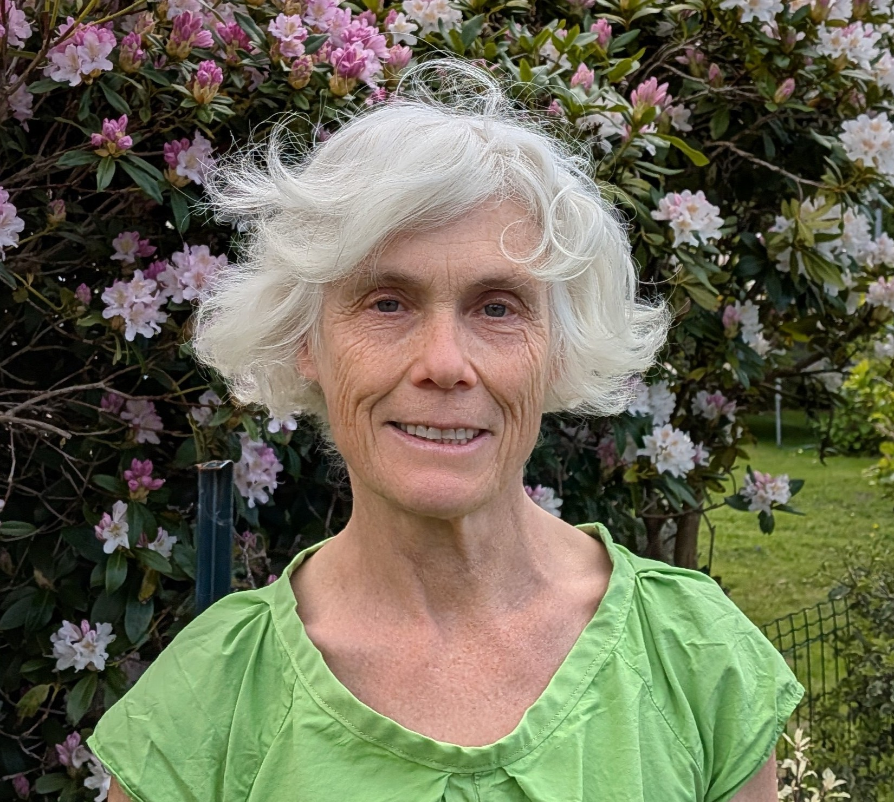
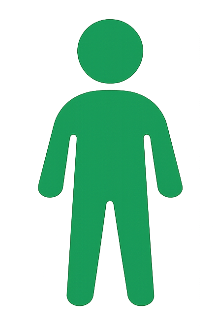

Nathalie Prigent
L'enseignante
Passionnée par le mouvement et les sensations qu'il induit
Mon Parcours
Passionnée par le mouvement et les sensations qu'il induit, j'ai commencé à pratiquer l'aï-ki-do en 1989. Je n'y ai pas trouvé ce que je cherchais.
Quand j'ai rencontré les arts internes avec Georges Saby (professeur de Thierry Allibert, …), j'ai compris que je pourrais y trouver ce qui m'animait et même bien plus que ce que j'imaginais : des qualités de mouvements très riches que j'explorais à partir de mes ressentis et des principes universels des arts internes chinois…
Formation aux Arts Internes
Avec Georges Saby (à partir de 2003)
J'ai commencé à intégrer la forme en 108 mouvements de Maître Yang-chen-Fu et des Qi Gong de différentes origines : taoïstes, bouddhistes, chamanistes...
Avec Philippe Schmidt (à partir de 2018)
Je reçois les enseignements de maître Cheng Man Ching grâce à la forme des 37 postures, du Tui shou et des nei-gong.
Explorations Complémentaires
D'autre part, depuis quinze ans, j'ai choisi d'explorer la biomécanique et la conscience de mon corps à travers :

Body-Mind Centering
Comment bouger à partir des os, des liquides, des fascias...
Depuis 2018 je pratique le Body-Mind Centering et actuellement je suis la formation de Alice Browaeys
Danse Contact
Pour étudier seul ou en duo l'utilisation de la gravité, l'antigravité, la tenségrité...
Communication Relationnelle
Par ailleurs, j'ai élargi mes savoir-faire à la communication relationnelle issue des travaux de Jacques Salomé, une forme de Communication Non Violente. J'ai animé pendant deux ans des groupes de parole sur Perros-Guirec.
Ainsi, j'accorde une grande importance à l'écoute et aux partages des ressentis, des sensations de chaque pratiquant.